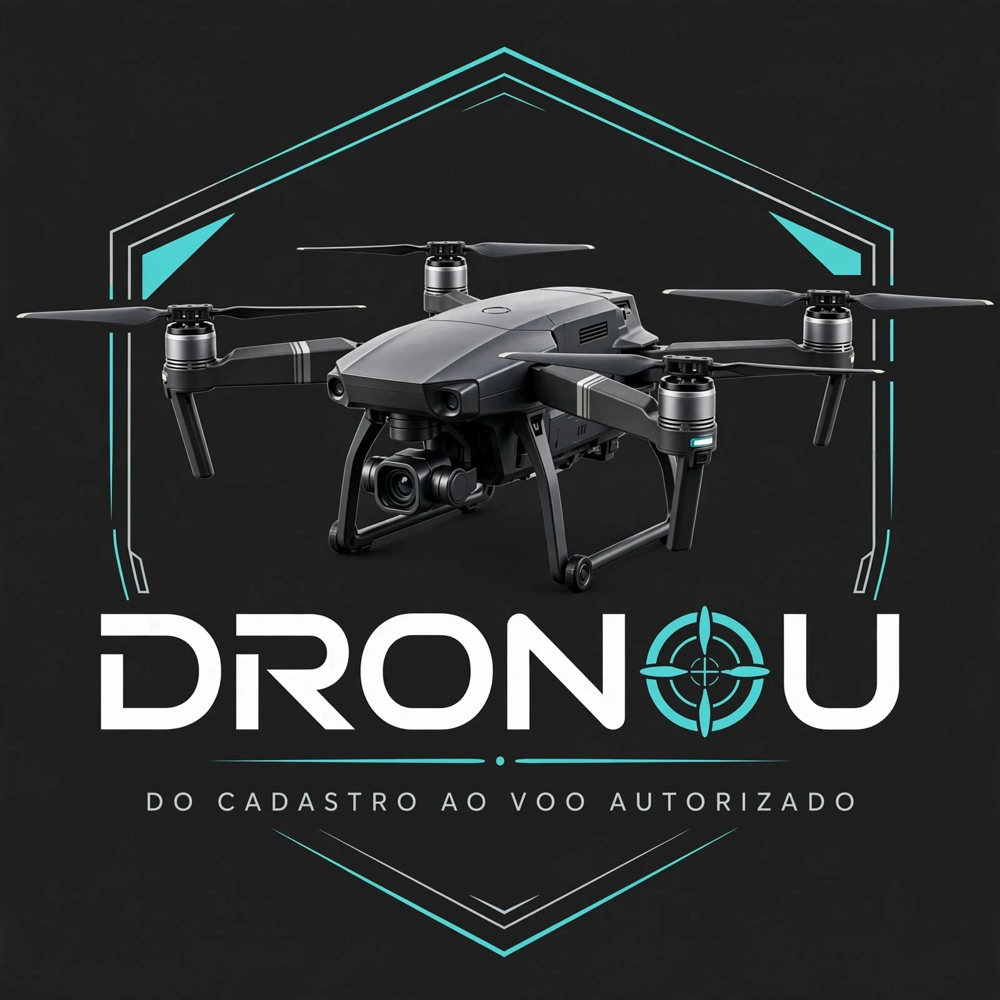

Qual é a cara do DRONOU?
6 conceitos em vetor (SVG): funcionam como logo, ícone de aplicativo, favicon e foto de perfil. Todos partem do mesmo verde/amarelo atual — o que muda é a personalidade. Depois da escolha, aplico no site, na lateral, no certificado e nos materiais.
A. Os “O” viram hélices ESCOLHIDA ✔
Os dois O de DRONOU são rotores girando — na versão final, girando de verdade, em animação suave. É uma palavra só, o símbolo está dentro do nome — ninguém precisa explicar. Funciona gigante num outdoor e minúsculo no favicon.
B. Drone de frente + “OU” em amarelo
O ícone que já está no site, refinado: drone visto de frente com um ✓ de “legalizado” no corpo. Amigável, óbvio para iniciante e ótimo como foto de perfil de WhatsApp.
C. “D” com rota de voo
Um D fechado com a rota pontilhada do drone e o ponto de decolagem. Mais corporativo e “empresa de tecnologia” — combina se o foco virar cliente profissional e B2B.
D. Ícone de aplicativo
Pensado primeiro para a bolinha do celular: quadrado arredondado verde com o drone de cima. É o que aparece em atalho, favicon e perfil — simples de reconhecer de longe.
E. Bordão em destaque
“OU!” como grito/caixa de som: a marca vira a própria frase que o povo repete no grupo. O mais “meme”, o mais arriscado — e provavelmente o mais compartilhável.
F. Esportiva / velocidade
Itálico com linhas de movimento, drone pequeno ao lado. Clima de canal de conteúdo, FPV e criador — boa se a marca crescer para mídia e comunidade.
✅ Logo oficial (a partir da referência enviada)

DRONOU — drone realista, moldura tech, “O” hélice/mira
Arquivos: logo-dronou.webp (arte completa, com a tagline original), logo-dronou-limpa.webp (sem a tagline em inglês — é a que está no topo do site) e icone-dronou.webp (só o drone, para lateral, perfil e favicon). Paleta da referência: fundo grafite + ciano — já aplicada ao topo e à lateral do site.
🆕 Nova candidata (mesmo perfil, tagline em português)
🏆 OFICIAL — Candidata 2: referência + “DO CADASTRO AO VOO AUTORIZADO”
Mesmo drone realista, moldura hexagonal ciano e “O” hélice/mira da referência — agora falando do nosso negócio. Arquivo: logo-opcao-nova.png. Escolhida como oficial: aplicada ao topo, lateral (recorte do drone), favicon e certificado. Arquivos: logo-oficial.webp (completa), logo-dronou-limpa.webp (sem tagline) e icone-dronou.webp (só o drone). A referência original ficou preservada em logo-referencia-original.webp.
Candidata 3 — variação do mesmo perfil
Segunda variação gerada na mesma rodada, salva como logo-opcao-nova-b.png para comparação.
Rodada 3 — drone realista sobre o nome
Corpo com volume, sensores, gimbal com lente e hélices com disco de movimento — o drone que todo piloto reconhece como um Mavic da vida, pairando sobre o DRONOU.
K. Drone realista + nome limpo
O drone vira o símbolo (dá pra usar sozinho como ícone/perfil) e o nome fica em tipografia forte, sem forçar letra. Em tamanho pequeno, usa-se só a aeronave; em tamanho grande, o conjunto completo.
Rodada 2 — um drone encaixado no DRONOU
Quatro jeitos de colocar a aeronave dentro da marca, não só ao lado dela.
G. O drone paira sobre o nome recomendado
Um quadricóptero visto de frente, com a câmera no centro, pairando sobre o DRONOU. Leitura instantânea: qualquer pessoa bate o olho e sabe que é drone — e o nome fica limpo, sem letra forçada.
H. Os “O” são os motores de baixo
O drone é visto de cima: o corpo fica sobre o N e os braços descem até os dois O, que viram os rotores com hélice girando. É o encaixe mais literal no nome — e o mais ousado.
I. O corpo do drone é um “D”
Ícone de aplicativo: drone de cima dentro do quadrado amarelo, e o corpo da aeronave é a letra D de DRONOU. Forte como símbolo sozinho — perfil, favicon e adesivo funcionam sem o nome.
J. O drone substitui um “O”
DR + drone + NOU: a aeronave entra no lugar da terceira letra, com a camerazinha olhando para você. É a versão mais divertida e “personagem” — o drone vira mascote da marca.
Como ela aparece pequena (teste de favicon/perfil)
← Voltar ao site • Arquivos SVG individuais podem ser exportados do conceito escolhido.